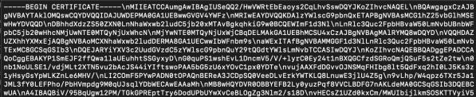
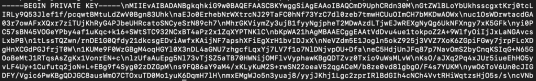

Installing and Configuring the IdentityIQ Service Code
The IdentityIQ service code is provided by SailPoint. The service code is packaged into platform-specific zip files and can be downloaded from Compass. Choose the zip file appropriate for your platform.
The Linux zip file includes an executable file, an env.template file, a shell script and service script to assist with installing the code as a service.
The Windows zip file contains an executable file and an env.template file.
Once you have downloaded the zip appropriate to your environment, follow the below steps:
-
Extract the zip to the private server dedicated to hosting the service code. See the section on Prerequisites for Integrating Microsoft Teams with IdentityIQ for more information.
-
The zip file includes a template for configuring the IdentityIQ application and Microsoft Teams environment, named
env.template. Copy this file and name it.env. -
Create a cert directory in the root location where your extracted service code and
.envfile are.
cert directory are located (see steps below for details on the cert directory).-
Edit the
.envfile to set configuration values for your environment. The values you must configure are listed below; some other values can be modified as needed for your environment. The variables in the file are commented, to give you information on their usage.-
LOG_FILENAME=identityiqbot.log: the bot log file name. It provides a file path that makes the file easy to access. -
LOG_LEVEL=warn: the bot log level. The valid values are error, warn, info, debug, and trace. For testing, it's a good idea to use debug or trace mode. Trace is especially useful for troubleshooting when issues come up. -
LOG_USE_LOCAL_TIMEZONE=true: the bot time format. Set to true if the time zone of the local server should be used. Anything other than true is false. -
LOG_USE_JSON_STYLE=false: specifies the style of log record. True writes a log record as a JSON object. Anything other than true writes a string. -
DEFAULT_LANGUAGE=en-us: this is used for looking up error message text. -
NOTIFICATION_TEXT_FORMAT=markdown: used to format the notification messages from IdentityIQ. Valid values are xml, markdown, or plain, and the variable defaults to markdown. This format only applies to notification messages based on EmailTemplate, but does not affect messages based on AdaptiveCardNotificationTemplate. -
PUBLIC_HOSTNAME=<public DNS hostname>: the hostname where you host the IdentityIQ bot service code. This must be a public DNS-resolvable hostname that resolves to the private IP of the server that will run the bot service code. This should be same as the hostname used for the Internal URL used in the chat application proxy. The traffic can be limited to a specific port, which is customizable. See Prerequisites for Integrating Microsoft Teams with IdentityIQ. -
LOCAL_HOSTNAME=<local private IP address>: use same value as forPUBLIC_HOSTNAME. -
PUBLIC_PORTandPRIVATE_PORT: the hosting ports for the IdentityIQ service code. The template provides default values which can be replaced, if necessary, with values specific to your installation. See the Connectivity and Security Prerequisites section in Prerequisites for Integrating Microsoft Teams with IdentityIQ. -
TENANT_ID=<Azure tenant ID>: your Azure tenant ID. -
PACKAGE_NAME=com.sailpoint.identityiqbot: package name of the Microsoft Teams application. Ensure that the existing value is not changed. -
WRAPPER_URL= https://microsoft-teams-bridge.sailpoint.com: wrapper Application URL which handles the authentication for IdentityIQ Approval screen. -
IIQ_UI_EXTERNAL_URL= <IIQAppSSOEntraProxy External URL (section 1)>: URL for Microsoft Teams Entra Application Proxy. -
IIQ_UI_EXTERNAL_APP_ID= <IIQAppSSOEntraProxy APP ID (section 1)>: Application ID for Microsoft Teams Entra Application Proxy. -
APPROVAL_TAB_NAME=My Approvals: tab name on the Microsoft Teams app where requests are approved. The default value is My Approvals, which can be changed to some other suitable name. -
APP_ID=<teams app ID>: the Application (client) ID value that was set as part of configuring the Microsoft Teams application. You can find this value on the Overview page of the Microsoft Teams application. See Creating a Microsoft Teams Application for IdentityIQ in Azure -
APP_NAME=<teams app name>: the name of your Microsoft Teams app. See Creating a Microsoft Teams Application for IdentityIQ in Azure -
APP_SECRET=<encrypted teams app secret>: IMPORTANT: this value is required but will be set later, in a secondary step. See step 5 below for more information. -
SSO_CONNECTION_NAME=<SSO connection associated with azure bot>: this value was set in the Add OAuth Connection Settings when you configured the Azure bot. See Creating an Azure Bot for IdentityIQ's Microsoft TeamsNote: The name should not have any spaces.
-
ALLOW_USER_TO_DISABLE_NOTIFICATIONS=false: notifications from IdentityIQ can be disabled; however, users will not be allowed to use the command. -
ENCRYPTION_SECRET=<provide strong value>: provide an 8-character encryption secret. This can be any value you like, but if this value changes, any items encrypted must be re-encrypted. -
IIQ_URL: the full URL to your installation of IdentityIQ. Use this format:
https://<host/ip>:<port>/<identityiq_home where <identityiq_home> is the directory in which you extracted the identityiq.war file during the IdentityIQ installation procedure. If you are using a load balancer to manage multiple IdentityIQ hosts, put the load balancer URL here. This URL must be accessible to the bot service. -
SERVICE_URL=https://smba.trafficmanager.net/amer/: service URL for proactive messaging. Ensure that the URL is not changed. -
AUTHORITY_HOST=https://login.microsoftonline.com: default setting for knowing if it is Microsoft application or not. Ensure that the URL is not changed. -
JWK_PROVIDER=https://login.botframework.com/v1/.well-known/keys: used to validate signature of Microsoft JWTs. Ensure that the URL is not changed. -
USER_AGENT=Microsoft-SkypeBotApi (Microsoft-BotFramework/3.0): value found in headers from Microsoft call to /api/messages endpoint - used for JWT verification. Ensure that the URL is not changed.
-
-
Encrypt and add your APP_SECRET. For your convenience, the IdentityIQ service code
provides an encryption endpoint.
-
Make sure rest of the
.envfile has been configured and saved before encrypting and adding the app secret. -
Start the bot (for example, by running the
identityiqbot.shscript). Note that because the secret has not yet been encrypted, you may see an error when initially starting the bot. You can continue past this error to complete the process for encrypting the secret. -
Use the following private POST endpoint to encrypt messages such as app secret. Provide a JSON object as the payload and a JSON object will be returned with the encrypted value.
https://<private IP>:<private port>/util/encrypt
Input: {“message” : “some message to be encrypted”}Output: { “status” : “success”, “encrypted_message” : “……”}An example curl command to encrypt the APP_SECRET is:
curl --insecure --request POST -H "Content-Type: application/json" --data @secretSource.json "https://<local private ip>:<private port>/util/encrypt"
-
Copy the returned value into the
APP_SECRET=<encrypted teams app secret>field of the.envfile.
-
-
Encrypt the CERT.
-
Make a backup copy of the raw CERT.
-
Convert the CERT to single line but preserve line endings by converting line ending characters to \n.

-
Use the following private POST endpoint to encrypt CERT. Provide a JSON object as the payload and a JSON object will be returned with the encrypted value.
https://<private IP>:<private port>/util/encrypt
Example Input:{“message” : “-----BEGIN CERTIFICATE-----\nMIIEAT...\n-----END CERTIFICATE-----\n”:}Output: { “status” : “success”, “encrypted_message” : “……”}An example curl command to encrypt the CERT is:
curl --insecure --request POST -H "Content-Type: application/json" --data @botCertSource.json "https://<local private ip>:<private port>/util/encrypt" > botCertEncrypted.json
-
Edit the file output to remove surrounding JSON formatting.
Note: Keep the encrypted_message property value only and remove the remaining properties and JSON format.
For Linux, use the command: cat -vet <filename>. If the output shows $ at the end, remove it using the command: truncate -s -1 <file name>.
-
Rename the edited file as bot.cert and save.
-
Copy the encrypted file to cert directory. Make sure the cert directory and bot.cert file are set with rw permission for owner only.
-
-
Encrypt the key.
-
Make a backup copy of the raw key.
-
Convert the key to single line but preserve line endings by converting line ending characters to \n.

Use the following private POST endpoint to encrypt key. Provide a JSON object as the payload and a JSON object will be returned with the encrypted value.
https://<private IP>:<private port>/util/encrypt
Example Input:{“message” : “-----BEGIN KEY-----\nMIIEAT...\n-----END KEY-----\n”:}Output: { “status” : “success”, “encrypted_message” : “…”}An example curl command to encrypt the key is:
curl --insecure --request POST -H "Content-Type: application/json" --data @botkeySource.json "https://<local private ip>:<private port>/util/encrypt" > botKeyEncrypted.json
-
Edit the file output to remove surrounding JSON formatting.
Note: Keep the encrypted_message property value only and remove the remaining properties and JSON format.
For Linux, use the command: cat -vet <filename>. If the output shows $ at the end, remove it using the command: truncate -s -1 <file name>.
-
Rename the edited file as bot.key and save.
-
Copy the encrypted file to cert directory. Make sure the cert directory and bot.key file are set with rw permission for owner only.
-
-
Restart the bot server.
Allowing Microsoft Teams Users to Disable Notifications
The ALLOW_USER_TO_DISABLE_NOTIFICATIONS property in the .env file enables Microsoft Teams users to opt out of notifications, by entering the command nonotifications command directly within the Microsoft Teams environment. This option is disabled by default; if you want to allow users to disable notifications, set this value to true.
You now have successfully installed and configured the IdentityIQ service code. For next step, refer Creating a Microsoft Teams Manifest.